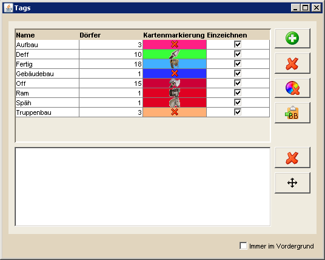

Tagübersicht |
|
|  | |
Die Tag-Ansicht gibt die Möglichkeit, importierte Gruppen, die in DS Workbench als Tags bezeichnet werden, zu konfigurieren. Hier kann man die Tags umbenennen oder ihr auf der Karte eingezeichnetes Symbol verändern. Dafür ändert man die Werte direkt in der Tabelle, woraufhin sie direkt auf die Karte übertragen werden. Auf der rechten Seite findet man drei Button die dazu dienen, einen neuen Tag zu erstellen, einen bestehenden Tag zu löschen oder die Farbmarkierung auf der Karte zu entfernen. Das Entfernen des zu zeichnenden Symbols auf der Karte kann man direkt über die Tabellenzelle bewerkstelligen. |